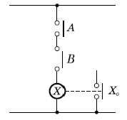
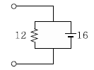
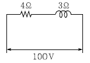

소방설비산업기사(전기) (2006-05-14 기출문제)
1과목: 소방원론
1. 실내에서 화재가 발생하여 그 화재가 어느 정도 진행되면 어느 순간에 화재가 실 전체로 확산되면서 화재가 확대되고 실내의 온도가 급격히 상승하는 현상이 발생하는데, 이러한 현상을 무엇이라고 하는가?
- 디토네이션(detonation)
- 화이어 볼(fire ball)
- 플래시오버(flash over)
- 디플러그레이션(deflagration)
(정답률: 93%)

2. 혐기성 미생물 등의 활동에너지의 축적에 의하여 자연발화를 일으키는 물질로서 가장 올바른 것은?
- 셀룰로이드
- 건성유
- 퇴비(퇴적물)
- 활성탄
(정답률: 53%)
3. 인간의 피난특성 중 화염, 연기에 대한 공포감으로 인하여 발화의 반대방향으로 이동하려는 성질을 무엇이라 하는가?
- 귀소본능
- 추종본능
- 지광본능
- 퇴피본능
(정답률: 83%)
4. 방재시스템의 인텔리전트(intelligent)화와 관련이 적은 것은?
- 정확한 방재정보의 파악
- 화재의 확대상황의 파악
- 방재시스템의 설치 및 관리비용절감
- 화재시 빌딩 내 잔류인원 등 정보의 정확한 파악
(정답률: 68%)
5. 정전기의 방지대책으로 가장 거리가 먼 것은?
- 접지를 한다.
- 부도체를 사용한다.
- 공기의 상대습도를 70% 이상으로 한다.
- 공기를 이온화한다.
(정답률: 86%)
6. 전기화재의 발화요인으로 크게 차지하지 않는 것은?
- 정전기
- 합선
- 누전
- 과전류
(정답률: 62%)
7. 기체 연료가 공기 중의 산소와 혼합되면서 연소하는 것으로 공기와 접촉하는 부분만이 반응하게 되므로 연소가 불충분하게 되고, 바람 등의 영향을 받기 쉬운 연소는?
- 증발연소
- 자기연소
- 확산연소
- 분해연소
(정답률: 62%)
8. 가연성 가스가 완전연소하였을 때 주로 발생되는 가스는?
- 산소
- 물, 일산화탄소
- 일산화탄소, 이산화탄소
- 이산화탄소, 물
(정답률: 68%)
9. 화재시 연기가 인체에 미치는 영향은 막대하다. 다음 중 사람의 활동에 가장 큰 영향을 미치는 요인에 해당하는 것은?
- 연기 속에 포함된 수분의 양
- 연기 속에 포함된 고정탄소의 양
- 연기 발생의 시간
- 일산화탄소의 증가와 산소의 감소
(정답률: 91%)
10. 분말소화약제 중 A, B, C급의 어떤 화재에도 사용할 수 있는 것은?
- 제1종분말 소화약제
- 제2종분말 소화약제
- 제3종분말 소화약제
- 제4종분말 소화약제
(정답률: 90%)
11. 실내 연기의 이동 속도에 대한 일반적인 설명으로 가장 적당한 것은?
- 수직으로 1m/s, 수평으로 5m/s 정도이다.
- 수직으로 3m/s, 수평으로 1m/s 정도이다.
- 수직으로 5m/s, 수평으로 3m/s 정도이다.
- 수직으로 7m/s, 수평으로 3m/s 정도이다.
(정답률: 79%)
12. 내화구조가 아닌 것은?
- 철골트러스
- 벽돌구조
- 철근콘크리트구조
- 석조
(정답률: 44%)
13. 눈, 코, 폐 등에 매우 자극성이 큰 가연성 가스로서 냉매로도 사용되는 물질은?
- 황화수소
- 아황산가스
- 이산화탄소
- 암모니아
(정답률: 77%)
14. 다음 중 1차 안전구획에 속하는 것은?
- 계단부속실(계단전실)
- 복도
- 계단
- 피난층에서 외부와 직면한 현관
(정답률: 80%)
15. 할로겐화합물 소화약제를 청정소화약제로 대체 하는 이유로서 가장 올바른 것은?
- 화재 후 잔재의 처리가 쉽다.
- 오존층의 파괴효과가 적다.
- 사용이 간편하며, 다른 소화방법에 비하여 냄새가 거의 없다.
- 화재를 초기에 진압하기 쉽다.
(정답률: 74%)
16. 다음 중 포소화약제의 포가 갖추어야 할 조건으로 적당하지 않은 것은?
- 화재면과 부착성이 좋을 것
- 응집성과 안정성이 우수할 것
- 환원시간(drainage time)이 짧을 것
- 약제는 독성이 없고 변질되지 말 것
(정답률: 92%)
17. 이상유체(ideal fluid)에 대한 설명 중 가장 올바른 것은?
- 비점성, 비압축성인 기체이다.
- 이산화탄소, 암모니아는 이상기체의 상태식에 가장 잘 부합한다.
- 분자들간의 상호작용을 갖고 있는 유체이다.
- 실제기체가 이상기체처럼 행동하려면 온도 와 압력이 낮아야 한다.
(정답률: 34%)
18. 청정소화약제의 물성을 평가하는 항목으로 심장의 (심장장애현상)이 나타나는 최저 농도를 무엇이라 하는가?
- ODP
- GWP
- NOAEL
- LOAEL
(정답률: 60%)
19. 용융금속이나 슬러그 같은 고온물질이 물 속에 투입되었을 때 고온 물질의 열이 저온의 물로 짧은 시간 내에 전달되어 일어나는 폭발의 형태로서 가장 올바른 것은?
- 증기폭발
- 분해폭발
- 분진폭발
- 가스폭발
(정답률: 61%)
20. 다음 중 발화점(℃)이 가장 낮은 물질은?
- 아세틸렌
- 메탄
- 이황화탄소
- 프로판가스
(정답률: 50%)
2과목: 소방전기회로
21. 피상전력 150kVA, 무상전력이 90kVar이면 역률은 몇 %인가?
- 60
- 70
- 80
- 90
(정답률: 47%)
22. 단상유도전동기의 기동방식이 아닌 것은?
- 분상기동
- 반발기동
- 콘덴서기동
- 스타델타기동
(정답률: 68%)
23. 변압기의 온도상승시험법으로 가장 적당한 방법은 어느 것인가?
- 진공법
- 반환부하법
- 열풍법
- 고조파 억제법
(정답률: 66%)
24. 그림과 같은 논리회로는?

- OR 회로
- AND 회로
- NOR 회로
- NOT 회로
(정답률: 72%)
25. 목표값이 시간에 관계없이 항상 일정한 값을 가지는 제어에 해당하는 것은?
- 정치제어
- 추종제어
- 비율제어
- 프로그램제어
(정답률: 84%)
26. 백열전구를 점등하기 전과 점등한 후의 저항을 비교하였을 때의 설명으로 옳은 것은?
- 점등하기 전과 점등한 후가 같다.
- 점등하기 전의 저항이 크다.
- 점등한 후의 저항이 크다.
- 사용전압에 따라 달라진다.
(정답률: 60%)
27. 평행판콘덴서에서 판 사이의 거리를 1/2로 하고 판의 면적을 2배로 하면 그 정전용량은 몇 배가 되는가?
- 1/4
- 1/2
- 4
- 8
(정답률: 70%)
28. 전류에 의한 자장의 방향을 결정하는 법칙은?
- 앙페르의 오른손나사법칙
- 플레밍의 오른손의 법칙
- 비오사바르 법칙
- 렌츠의 법칙
(정답률: 48%)
29. 출력전압을 일정하게 유지하기 위해서 주로 사용되는 다이오드는?
- 터널다이오드
- 제너다이오드
- 바랙터다이오드
- 바리스터
(정답률: 90%)
30. 직류 전용으로 눈금이 균등하고 감도가 높으며, 정밀용으로 적합한 계기는?
- 가동철편형
- 가동코일형
- 전류력계형
- 열전대형
(정답률: 43%)
31. 변압기, 차단기, 유입개폐기, 계기용변성기 등고압기기의 철대나 금속제 케이스에 시행하는 접지공사의 종류는?
- 제1종 접지공사
- 제2종 접지공사
- 제3종 접지공사
- 특별 제3종 접지공사
(정답률: 44%)
32. 반도체 물질이 아닌 것은?
- 셀렌
- 규소
- 리듐
- 게르마늄
(정답률: 21%)
33. 조종하는 사람이 없는 엘리베이터의 자동제어는 무엇인가?
- 프로그램제어
- 추종제어
- 비율제어
- 정치제어
(정답률: 76%)
34. 정류기형 계기의 눈금이 지시하는 것은 무엇인가?
- 최대값
- 실효값
- 평균값
- 순시값
(정답률: 76%)
35. 서보전동기는 서보기구에서 주로 어떤 곳의 기능을 담당하는가?
- 조작부
- 검출부
- 제어부
- 비교부
(정답률: 68%)
36. 그림과 같은 회로에서 저항은 12Ω, 용량리액턴스는 16Ω이다. 여기에 교류 200V를 가하는 경우의 전전류는 약 몇 A인가?

- 8
- 10
- 21
- 42
(정답률: 48%)
37. 그림과 같은 회로에서 소비전력은 몇 W인가?

- 500
- 1200
- 1600
- 2000
(정답률: 49%)
38. 증폭기에서 발생하는 일그러짐(DISTOR- TION)의 원인이 아닌 것은?
- 주파수 일그러짐
- 위상 일그러짐
- 비직선 일그러짐
- 잡음(NOISE)
(정답률: 58%)
39. 정전용량 2μF의 콘덴서를 직류 3000V로 충전할때 이것에 축적되는 에너지는 몇 J인가?
- 6
- 9
- 12
- 18
(정답률: 78%)
40. 필터가 없는 단상 브리지 정류회로에서 2차측 평균 직류전압이 저항 5Ω의 부하에 24V가 걸린다. 변압기 2차측의 최대치 전압은 몇 V인가?
- 5π
- 12π
- 24π
- 50π
(정답률: 64%)
3과목: 소방관계법규
41. 다음 중 소방특별조사자의 자격 기준에 미치지 못하는 사람은?
- 소방공무원으로서 소방기술사 자격을 취득한 자
- 소방공무원으로서 소방시설관리사 자격을 취득한 자
- 소방공무원으로서 소방설비기사 또는 소방설비산업기사 자격을 취득한 자
- 소방공무원으로서 국가기술자격법에 의한 산업안전기사와 관련된 자격을 취득한 자
(정답률: 82%)
42. 소방시설 중 소화설비에 해당되지 않는 것은?
- 소화기
- 캐비넷형 자동소화기기
- 시각경보기
- 자동확산소화기
(정답률: 81%)
43. 위험물제조소 등의 완공검사필증을 잃어버려 재발급을 받은 자가 잃어버린 완공검사필증을 발견한 경우에는 이를 며칠 이내에 완공검사필증을 재발급한 시ㆍ도지사에게 제출해야 하는가?
- 즉시
- 15일
- 10일
- 30일
(정답률: 49%)
44. 소방시설업 중 설계도서에 따라 소방시설을 신설ㆍ증설ㆍ개설ㆍ이전 및 정비를 하는 소방시설업은?
- 소방공사감리업
- 소방시설설계업
- 소방시설공사업
- 소방시설관리업
(정답률: 55%)
45. 다음 중 소방대상물이라고 볼 수 없는 것은?
- 산림
- 건축물
- 차량
- 사람
(정답률: 77%)
46. 다음 중 물분무등소화설비가 아닌 것은?
- 스프링클러설비
- 포소화설비
- 분말소화설비
- 청정소화약제소화설비
(정답률: 30%)
47. 소방본부장ㆍ소방서장 또는 소방대장은 사람을 구출하거나 불이 번지는 것을 막기 위하여 필요한 때에는 화재가 발생하거나 불이 번질 우려가 있는 소방대상물 및 토지를 일시적으로 사용하거나 그 사용의 제한 또는 소화활동에 필요한 처분을 할 수 있는데 이를 무엇이라 하는가?
- 피난명령
- 소화종사명령
- 강제처분명령
- 소방응원
(정답률: 63%)
48. 소화활동설비에서 제연설비를 설치하여야 하는 특정소방대상물의 기준으로 틀린 것은?
- 문화 및 집회시설, 운동시설로서 무대부의 바닥면적이 200m2 이상인 것
- 근린생활시설·위락시설·판매시설·숙박시설로서 지하층 또는 무창층의 바닥면적이 1000m2 이상인 것
- 지하가(터널을 제외한다)로서 연면적 1000m2이상인 것
- 지하가 중 터널로서 길이가 1000m 이상인 것
(정답률: 23%)
49. 다음의 소방시설 중 하자보수대상 소방시설과 하자보수 보증기간이 틀린 것은?
- 옥내소화전설비 : 3년
- 비상방송설비 : 3년
- 자동화재탐지설비 : 3년
- 물분무등소화설비 : 3년
(정답률: 73%)
50. 옥내소화전설비를 설치하여야 하는 특정소방대상물은?
- 공연장으로서 연면적이 1000m2 인 것
- 음식점으로서 연면적이 1000m2 인 것
- 지하층으로서 바닥면적이 200m2 인 것
- 여관으로서 연면적이 1500m2 인 것
(정답률: 29%)
51. 전문 소방시설 설계업의 기술인력ㆍ등록기준에서 주된 기술인력과 보조기술인력의 최소 인원수로 옳은 것은?
- 주된 기술인력 : 1명, 보조기술인력 : 1명
- 주된 기술인력 : 2명, 보조기술인력 : 2명
- 주된 기술인력 : 1명, 보조기술인력 : 3명
- 주된 기술인력 : 2명, 보조기술인력 : 3명
(정답률: 62%)
52. 형식승인을 얻어야 할 소방용품 등이 아닌 것은?
- 감지기
- 휴대용 비상조명등
- 소화기
- 방염액
(정답률: 63%)
53. 위험물 제조소의 게시판에 반드시 기재할 사항이 아닌 것은?
- 위험물의 저장 최대수량
- 위험물의 유별·품명
- 위험물에 대한 대처방법
- 안전관리자의 성명 또는 직명
(정답률: 49%)
54. 제4류 위험물에 속하지 않는 것은?
- 아염소산염류
- 특수인화물
- 알코올류
- 동식물유류
(정답률: 65%)
55. 특정소방대상물의 관계인 및 소방안전관리대상물의 소방안전관리자의 업무로서 가장 먼 것은?
- 소방시설 그 밖의 소방관련시설의 유지·관리
- 자위소방대의 조직
- 위험물질 보관방법 강구
- 화기취급의 감독
(정답률: 47%)
56. 소방시설업자는 등록사항의 변경이 있을 때에는 변경일로부터 며칠 이내에 서류를 시ㆍ도지사에게 제출하여야 하는가?
- 7일 이내
- 14일 이내
- 30일 이내
- 60일 이내
(정답률: 46%)
57. 소방본부장 또는 소방서장은 원활한 소방활동을 위하여 소방용수시설 및 소방활동에 필요한 지리조사를 실시하여야 한다. 조사 횟수로 옳은 것은 어느 것인가?
- 월 1회 이상
- 월 2회 이상
- 연 1회 이상
- 연 2회 이상
(정답률: 50%)
58. 위험물 중 제6류 위험물(산화성 액체)의 품명에 속하지 않는 것은?
- 질산
- 과염소산
- 황린
- 과산화수소
(정답률: 76%)
59. 특수가연물에 해당되지 않는 것은?
- 면화류
- 유황
- 합성수지류
- 석탄 및 목탄류
(정답률: 48%)
60. 다음 중 소방신호가 아닌 것은?
- 경계신호
- 발화신호
- 해제신호
- 비상신호
(정답률: 69%)
4과목: 소방전기시설의 구조 및 원리
61. 비상콘센트의 플러그 접속기는 단상 220V의 경우 어느 것을 사용하여야 하는가?
- 4극 플러그 접속기
- 접지형 4극 플러그 접속기
- 2극 플러그 접속기
- 접지형 2극 플러그 접속기
(정답률: 80%)
62. 지하층으로서 특정소방대상물의 바닥부분 몇 면이상이 지표면과 동일한 경우, 해당층에 한하여 무선통신보조설비를 설치하지 아니할 수 있는가?
- 1면
- 2면
- 3면
- 4면
(정답률: 69%)
63. 실내에 설치하는 비상방송설비의 확성기의 음성 입력은 최소 몇 W 이상으로 하여야 하는가?
- 1
- 2
- 3
- 4
(정답률: 81%)
64. 휴대용 비상조명등에 대한 화재안전기준으로 틀린 것은?
- 건전지를 사용하는 경우에는 방전방지 조치를 할 것
- 사용시 자동으로 점등되는 구조일 것
- 건전지의 용량은 10분 이상 유효하게 사용할 수 있는 것으로 할 것
- 충전식 배터리의 용량은 20분 이상 유효하게 사용할 수 있는 것으로 할 것
(정답률: 66%)
65. 사람이 근무하지 아니하는 시간에는 무인경비시스템으로 관리하는 업무시설의 경우 바닥면적이 몇 m2 이상의 층이 있는 경우에는 자동화재속보설비를 설치해야 하는가?
- 500m2
- 1000m2
- 1300m2
- 1500m2
(정답률: 37%)
66. 비상방송설비의 상용전원은 그 설비에 대한 감시상태를 몇 분간 지속한 후 유효하게 몇 분 이상 경보할 수 있는 축전지설비를 설치하여야 하는가?
- 30분간 지속, 5분 이상 경보
- 30분간 지속, 10분 이상 경보
- 60분간 지속, 5분 이상 경보
- 60분간 지속, 10분 이상 경보
(정답률: 79%)
67. 감지기의 종류에서 부착높이가 15m 이상 20m미만에 설치할 수 없는 감지기는?
- 이온화식 1종
- 연기복합형
- 보상식 스포트형
- 불꽃감지기
(정답률: 67%)
68. 비상콘센트 설비에서 비상콘센트는 바닥으로부터 어느 정도의 위치에 설치하여야 하는가?
- 0.5m 이상~1.0m 이하
- 0.8m 이상~1.2m 이하
- 0.8m 이상~1.5m 이하
- 1.5m 이상~1.8m 이하
(정답률: 73%)
69. 경계전로의 정격전류가 60A를 초과하는 전로에 설치하여야 하는 누전경보기는?
- 1급 누전경보기
- 2급 누전경보기
- 3급 누전경보기
- 4급 누전경보기
(정답률: 77%)
70. 다량의 화기를 취급하는 주방에 설치하는 정온식감지기는 공칭작동온도가 최고 주위 온도보다 몇 도 이상 높게 설치하여야 하는가?
- 5℃
- 10℃
- 15℃
- 20℃
(정답률: 75%)
71. 무선통신보조설비의 증폭기에 대한 설치 기준이 틀린 것은?
- 비상전원 용량은 30분 이상 작동시킬 수 있는 것으로 할 것
- 전원은 전기가 정상적으로 공급되는 축전지, 전기저장장치 또는 교류전압 옥내간선으로 할 것
- 전원까지의 배선은 전용으로 할 것
- 표시등 및 전류계를 설치할 것
(정답률: 66%)
72. 연기감지기의 설치 장소의 기준으로 틀린 것은?
- 계단 및 경사로
- 복도(30m 미만의 것을 제외한다.)
- 천장 또는 반자의 높이가 20m 이상의 장소
- 엘리베이터 승강로(권상기실이 있는 경우에는 권상기실)·린넨슈트·파이프덕트 기타 이와 유사한 장소
(정답률: 57%)
73. 자동화재탐지설비와 연동으로 작동하여 자동적으로 화재 발생 상황을 소방관서에 전달하는 것을 무엇이라고 하는가?
- 비상벨설비
- 비상방송설비
- 자동화재속보설비
- 무선통신보조설비
(정답률: 84%)
74. 차동식 분포형 감지기의 종류에 해당되지 않는 것은 무엇인가?
- 공기관식
- 열전대식
- 열반도체식
- 이온화식
(정답률: 51%)
75. 무선통신보조설비의 누설동축케이블은 화재에따라 해당 케이블의 피복이 소손된 경우에는 케이블 본체가 떨어지지 아니하도록 ( ) 이내마다 금속재 또는 자기제 등의 지지금구로 벽ㆍ천장ㆍ기둥 등에 견고하게 고정시켜야 한다. 이때 괄호 안에 알맞은 것은?
- 3m
- 4m
- 5m
- 6m
(정답률: 66%)
76. 화재 발생 상황을 단독으로 감지하여 자체에 내장된 음향장치로 경보하는 감지기는?
- 단독경보형 감지기
- 불꽃감지기
- 열연기 복합형 감지기
- 광전식(분리형) 중 아나로그 방식 감지기
(정답률: 88%)
77. 각 실마다 설치하되, 바닥면적이 150m2를 초과하는 경우에는 150m2마다 1개 이상 설치하여야 하는 감지기는?
- 이온화식 감지기
- 불꽃감지기
- 아날로그 방식 감지기
- 단독경보형 감지기
(정답률: 73%)
78. 옥내소화전설비의 전원회로 배선으로 내화배선에 사용하는 전선의 종류에 해당하지 않는 것은?
- 600V 비닐절연전선
- 가교폴리에틸렌 절연비닐외장케이블
- 알루미늄 피복 케이블
- 강대 외장 케이블
(정답률: 43%)
79. 유도표지는 주위 조도 몇 룩스에서 60분간 발광후 직선거리 20m 떨어진 위치에서 보통 시력으로 식별되어야 하고 3m 거리에서 표시면의 문자 또는 화살표 등을 쉽게 식별할 수 있는 것으로 하여야 하는가?
- 0
- 1
- 2
- 3
(정답률: 32%)
80. 10층 짜리 건물의 3층 전체를 위락시설 및 스포츠 센터로 사용하고자 한다. 이 층에 설치해야하는 피난기구의 최소 개수는? (단, 바닥면적이 3000m2이다.)
- 1개
- 2개
- 3개
- 4개
(정답률: 47%)